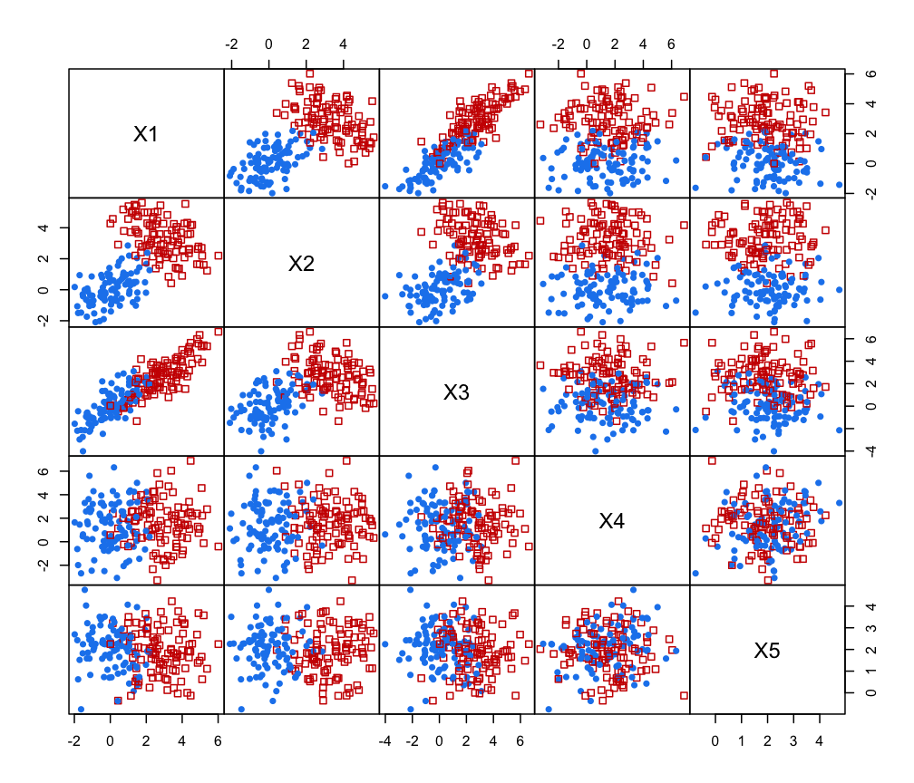

Variable Selection for Gaussian Model-Based Clustering
clustvarsel.RdA function which implements variable selection methodology for model-based clustering which allows to find the (locally) optimal subset of variables in a dataset that have group/cluster information.
A greedy or headlong search can be used, either in a forward-backward or backward-forward direction, with or without sub-sampling at the hierarchical clustering stage for starting mclust models. By default the algorithm uses a sequential search, but parallelisation is also available.
Usage
clustvarsel(data,
G = 1:9,
search = c("greedy", "headlong"),
direction = c("forward", "backward"),
emModels1 = c("E", "V"),
emModels2 = mclust.options("emModelNames"),
samp = FALSE,
sampsize = round(nrow(data)/2),
hcModel = "VVV",
allow.EEE = TRUE,
forcetwo = TRUE,
BIC.diff = 0,
BIC.upper = 0,
BIC.lower = -10,
itermax = 100,
parallel = FALSE,
fit = TRUE,
verbose = interactive())Arguments
- data
A numeric matrix or data frame where rows correspond to observations and columns correspond to variables. Categorical variables are not allowed.
- G
An integer vector specifying the numbers of mixture components (clusters) for which the BIC is to be calculated. The default is
G = 1:9.- search
A character vector indicating whether a
"greedy"or, potentially quicker but less optimal,"headlong"algorithm is to be used in the search for clustering variables.- direction
A character vector indicating the type of search:
"forward"starts from the empty model and at each step of the algorithm adds/removes a variable until the stopping criterion is satisfied;"backward"starts from the model with all the available variables and at each step of the algorithm removes/adds a variable until the stopping criterion is satisfied.- emModels1
A vector of character strings indicating the models to be fitted in the EM phase of univariate clustering. Possible models are
"E"and"V", described inmclustModelNames.- emModels2
A vector of character strings indicating the models to be fitted in the EM phase of multivariate clustering. Possible models are those described in
mclustModelNames.- samp
A logical value indicating whether or not a subset of observations is to be used in the hierarchical clustering phase used to get starting values for the EM algorithm.
- sampsize
The number of observations to be used in the hierarchical clustering subset. By default, a random sample of approximately half of the sample size is used.
- hcModel
A character string specifying the model to be used in hierarchical clustering for choosing the starting values used by the EM algorithm. By default, the
"VVV"covariance structure is used (seehc).- allow.EEE
A logical value indicating whether a new clustering will be run with equal within-cluster covariance for hierarchical clustering to get starting values, if the clusterings with variable within-cluster covariance for hierarchical clustering do not produce any viable BIC values.
- forcetwo
A logical value indicating whether at least two variables will be forced to be selected initially, regardless of whether BIC evidence suggests bivariate clustering or not.
- BIC.diff
A numerical value indicating the minimum BIC difference between clustering and no clustering used to accept the inclusion of a variable in the set of clustering variables in a forward step of the greedy search algorithm. Furthermore, minus
BIC.diffis used to accept the exclusion of a selected variable from the set of clustering variable in a backward step of the greedy search algorithm. Default is 0.- BIC.upper
A numerical value indicating the minimum BIC difference between clustering and no clustering used to select a clustering variable in the headlong search. Default is 0.
- BIC.lower
A numerical value indicating the level of BIC difference between clustering and no clustering below which a variable will be removed from consideration in the headlong algorithm. Default is -10.
- itermax
An integer value giving the maximum number of iterations (of addition and removal steps) the selected algorithm is allowed to run for.
- parallel
An optional argument which allows to specify if the selected
"greedy"algorithm should be run sequentially or in parallel.For a single machine with multiple cores, possible values are:
a logical value specifying if parallel computing should be used (
TRUE) or not (FALSE, default) for running the algorithm;a numerical value which gives the number of cores to employ. By default, this is obtained from the function
detectCores;a character string specifying the type of parallelisation to use. This depends on system OS: on Windows OS only
"snow"type functionality is available, while on Unix/Linux/Mac OSX both"snow"and"multicore"(default) functionalities are available.
In all the cases described above, at the end of the search the cluster is automatically stopped by shutting down the workers.
If a cluster of multiple machines is available, the algorithm can be run in parallel using all, or a subset of, the cores available to the machines belonging to the cluster. However, this option requires more work from the user, who needs to set up and register a parallel back end. In this case, the cluster must be explicitly stopped with
stopCluster.- fit
A logical specifying if the model with the selected "best" subset should be fitted at the end of the procedure. By default is set to
TRUE.- verbose
A logical indicating if info must be provided at each step of the algorithm. By default is set to
TRUEduring interactive sessions, andFALSEotherwise.
Details
This function implements variable selection methodology for model-based clustering.
The selection methods available are "greedy" search and "headlong" search (see argument search).
The greedy search at each step either checks all the variables not currently included in the set of clustering variables singly for inclusion into the set, or checks all variables in the set of clustering variables singly for exclusion.
The headlong search only checks until a variable is included or excluded (i.e., does not necessarily check all possible variables for inclusion/exclusion at each step) and any variable with evidence of clustering below a certain level at any stage is removed from consideration for the remainder of the algorithm.
Greedy search can be performed forward-backward starting from the empty model, or backward-forward starting from the model with all the variables included (see argument direction). Currently, headlong search can only run forward-backward.
The criterion to assess each variable's evidence for being useful to the clustering is given by the difference between the BIC for the clustering model using the set of clustering variables already included and the variable being checked, and the sum of BICs for the model with clustering using the set of already selected clustering variables without the variable being checked and the model for the variable being checked being conditionally independent of the clustering given the other clustering variables. The latter is modeled as a regression of the variable being checked on the other clustering variables. A subset selection procedure is also performed on the regression step.
Clustering models are fitted using Mclust, where each model is allowed to vary over the specified number of components G and any of the different covariance parameterisations set in emModels1 and emModels2.
The default value for forcetwo is TRUE because often in practice there will be little evidence of clustering on the univariate or bivariate level although there is multivariate clustering present and these variables are used as starting points to attempt to find this clustering, if necessary being removed later in the algorithm.
The default value for allow.EEE is TRUE but if necessary to speed up the algorithm it can be set to FALSE. Other speeding-up restrictions include reducing the emModels1 (to "E", say) and the emModels2 to a smaller set of covariance parameterisations.
Reducing the maximum possible number of clusters present in the data will also increase the speed of the algorithm.
Another time-saving device is the samp option which uses the same algorithm but uses only a subset of the observations in the expensive hierarchical phase for initialisation of EM algorithm in Mclust.
Finally, the headlong search may be quicker than the greedy search option in data sets with large numbers of variables (depending on the values of the upper and lower bounds chosen for the BIC difference).
The defaults for the eps, tol and itmax options for the Mclust
steps run in the algorithm can be changed by using the mclust.options function.
Value
An object of class 'clustvarsel' with the following components:
- variables
The name of input variables.
- subset
A vector of values specifying for the selected variables the columns position in the input data.frame or matrix.
- steps.info
A matrix with a row for each step of the algorithm providing:
the name of the variable proposed;
the BIC of the clustering variables' model at the end of the step;
the BIC difference between clustering and not clustering for the variable;
the type of step (Add/Remove);
the decision for the proposed step (Accepted/Rejected).
- search
A string specifying the type of search employed.
- direction
A string specifying the direction of search employed.
- model
If input argument
fit = TRUE, a'Mclust'object containing the final model fitted on the "best" subset selected.
References
Raftery, A. E. and Dean, N. (2006) Variable Selection for Model-Based Clustering. Journal of the American Statistical Association, 101(473), 168-178.
Badsberg, J. H. (1992) Model search in contingency tables by CoCo. In Dodge, Y. and Whittaker, J. (Eds.), Computational Statistics, Volume 1, pp. 251-256
Maugis, C., Celeux, G., Martin-Magniette M. (2009) Variable Selection for Clustering With Gaussian Mixture Models. Biometrics, 65(3), 701-709.
Scrucca, L. and Raftery, A. E. (2018) clustvarsel: A Package Implementing Variable Selection for Gaussian Model-based Clustering in R. Journal of Statistical Software, 84(1), pp. 1-28.
Examples
# Simulate data with 2 clusters in the first two variables and no
# clustering in the rest. Clusters have mixing proportion pro, means
# mu1 and mu2 and variances sigma1 and sigma2
require(MASS)
#> Loading required package: MASS
n <- 200
pro <- 0.5
mu1 <- c(0,0)
mu2 <- c(3,3)
sigma1 <- matrix(c(1,0.5,0.5,1),2,2,byrow=TRUE)
sigma2 <- matrix(c(1.5,-0.7,-0.7,1.5),2,2,byrow=TRUE)
X <- matrix(0, n, 5)
colnames(X) <- paste("X", 1:ncol(X), sep ="")
# generate the clustering variables
u <- runif(n)
Class <- ifelse(u < pro, 1, 2)
X[u < pro, 1:2] <- mvrnorm(sum(u < pro), mu = mu1, Sigma = sigma1)
X[u >= pro, 1:2] <- mvrnorm(sum(u >= pro), mu = mu2, Sigma = sigma2)
# generate the non-clustering variables
X[,3] <- X[,1] + rnorm(n)
X[,4] <- rnorm(n, mean = 1.5, sd = 2)
X[,5] <- rnorm(n, mean = 2, sd = 1)
# plot the data
clPairs(X, Class, gap = 0)

# sequential forward greedy search (default)
out <- clustvarsel(X, G = 1:5)
out
#> ------------------------------------------------------
#> Variable selection for Gaussian model-based clustering
#> Stepwise (forward/backward) greedy search
#> ------------------------------------------------------
#>
#> Variable proposed Type of step BICclust Model G BICdiff Decision
#> X2 Add -836.4149 E 2 15.29468 Accepted
#> X1 Add -1490.1021 VEV 2 79.36803 Accepted
#> X5 Add -2085.4979 VII 3 -12.56056 Rejected
#> X1 Remove -812.2814 V 4 55.23453 Rejected
#>
#> Selected subset: X2, X1
summary(out$model)
#> ----------------------------------------------------
#> Gaussian finite mixture model fitted by EM algorithm
#> ----------------------------------------------------
#>
#> Mclust VEV (ellipsoidal, equal shape) model with 2 components:
#>
#> log-likelihood n df BIC ICL
#> -718.5595 200 10 -1490.102 -1501.624
#>
#> Clustering table:
#> 1 2
#> 93 107
table(Class, out$mod$classification)
#>
#> Class 1 2
#> 1 93 3
#> 2 0 104
if (FALSE) { # \dontrun{
# sequential backward greedy search
clustvarsel(X, G = 1:5, direction = "backward")
# sequential backward greedy search with subsampling at hierarchical
# intialisation stage
clustvarsel(X, G = 1:5, direction = "backward",
samp = TRUE, sampsize = 50)
# parallel backward greedy search
clustvarsel(X, G = 1:5, direction = "backward", parallel = TRUE)
# headlong search
clustvarsel(X, G = 1:5, search = "headlong")
} # }